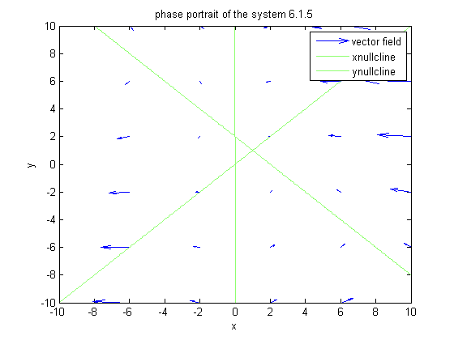

syms x y X= x*(2-x-y); Y= x-y; figure F=[X Y]; vectline (F,[x y],[-10 10 -10 10]); u=-10:0.01:10; hold on ezplot('x*(2-x-y)',[-10,10,-10,10]) ezplot('x-y',[-10,10,-10,10]); axis([-10 10 -10 10]) legend('vector field','xnullcline','ynullcline') title('phase portrait of the system 6.1.5')